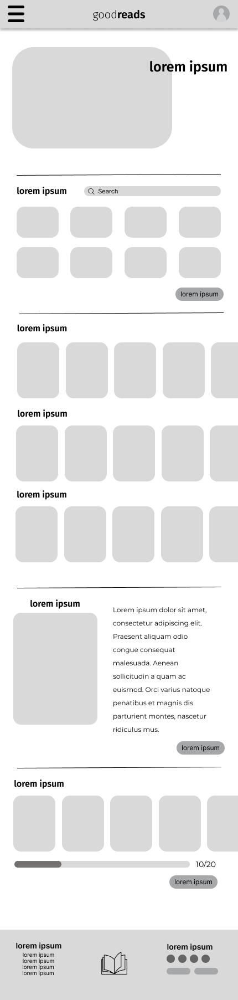

goodreads is a popular social cataloging platform for book lovers, allowing users to track their reading, write reviews, and discover new books based on recommendations and community interactions. however, despite its widespread usage, many users feel that the website and app are outdated in terms of design and user experience. the goals of this projects was to explore how a redesign would improve the platform's usability, user engagement, and overall appeal, while retaining its core functionality.
the primary object of the redesign was to modernize the platform, enhance user engagement, and improve the user experience across both web and mobile.

age: 25 years old
location: los angeles, ca
occupation: marketing coordinator for a tech start-up
this layout focused on a user experience that prioritizes discovering new books while maintaining quick access to the user's reading progress. at the top, a large horizontal carousel allows users to browse featured books easily. below, there's a reading challenge progress bar paired with quick access buttons for "reading," "want to read," and "read" sections, helping users manage their book lists seamlessly.

this design was focused on helping users discover new books and providing a streamlined experience to easily track their reading challenge progress. the layout features a prominent search bar for quick book look-up, multiple sections of horizontal carousels to explore popular and recommended books, and a dedicated area that highlights the user's reading challenge with a progress bar, making it simple for users to stay motivated and find their next read.
impact on users
being the first design project i have ever worked on, this was a great learning process for me. i learned the importance of aligning design decisions with both user needs and business goals, teaching me to appreciate the value of design, continuous feedback, and effective communication. i learned to understand why design is so important, and that all because it looks pretty, it's not the most user-friendly.